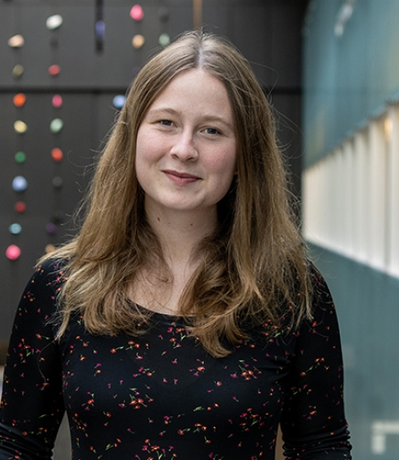

Taillte May is a postdoctoral researcher at Tecnico in Lisbon. She received her PhD in 2025 at the Perimeter Institute for Theoretical Physics in Canada. Her main interests are in using black holes and gravitational waves to test fundamental physics.